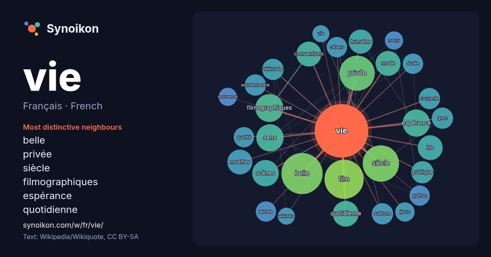

Français · French · popular word
vie
“life” · The words found around it in 1182 instances from French Wikipedia, Wikiquote.

Most distinctive neighbours
- belle 35×
- privée 24×
- siècle 20×
- filmographiques 20×
- espérance 19×
- quotidienne 16×
- conventions 15×
- life 15×
- modifier 15×
- humaine 12×
- suétone 12×
- extraterrestre 12×
- courante 11×
- жизнь 11×
- césars 11×
- python 11×
- sens 11×
- mode 11×
- film 10×
- télévisée 9.7×
× = how many times more often than in general French Wikipedia text.
Most frequent neighbours
- belle 41
- film 37
- siècle 32
- privée 30
- français 28
- politique 23
- fin 21
- série 21
- filmographiques 19
- espérance 18
- sens 18
- scènes 17
- quotidienne 16
- conventions 15
- homme 15
- life 15
- mode 15
- modifier 15
- années 14
- humaine 14
In context
- Pour les articles homonymes, voir Vie (homonymie). La vie est un phénomène naturel qui se manifeste à travers des structures matérielles appelées organismes Wikipedia snippets · Vie
- vivant Espérance de vie Durée de vie Sens de la vie Vie quotidienne Vie privée Vie est un nom de lieu notamment porté par : La Vie est un fleuve côtier Wikipedia snippets · Vie (homonymie)
- La Vie, la vie modifier - modifier le code - voir Wikidata (aide) La Vie, la vie est une série télévisée québécoise en 39 épisodes de 22 minutes, créée Wikipedia snippets · La Vie, la vie
- les conventions filmographiques. Ma vie sans lui Pour plus de détails, voir Fiche technique et Distribution. Ma vie sans lui (Catch and Release) est une Wikipedia snippets · Ma vie sans lui
- dans un milieu aquatique. Pour acquérir ces substances essentielles à la vie, la plupart des animaux utilisent des organes de perception. Ils utilisent Wikipedia snippets · Animal
- les conventions filmographiques. Vie pour vie Pour plus de détails, voir Fiche technique et Distribution. Vie pour vie (Жизнь за жизнь, Zhizn za zhizn) Wikipedia snippets · Vie pour vie
- La Vie après la vie (Life After Life) est un livre de parapsychologie publié en 1975 et écrit par le docteur américain en philosophie Raymond Moody. Le Wikipedia snippets · La Vie après la vie
- les articles homonymes, voir Vie (homonymie). Pour l’article ayant un titre homophone, voir Lavis. La Vie Logo de La Vie. modifier - modifier le code Wikipedia snippets · La Vie
More French words
- art
- automne
- carte
- chanson
- chat
- chemin
- cheval
- chien
- climat
- cloche
- cœur
- dieu
- désert
- eau
- famille
- forêt
- histoire
- hiver
- horloge
- jardin
- langue
- miel
- miroir
- monnaie
- montagne
- mort
- mère
- nature
- nourriture
- ombre
- pain
- pluie
- pont
- pouvoir
- printemps
- santé
- science
- sel
- silence
- temps
- tempête
- thé
- train
- travail
- trésor
- ville
- vérité
- étoile
- île
Precomputed on 2026-10-09 with default settings (±5 words, medium corpus). The interactive map can refresh it with live data.